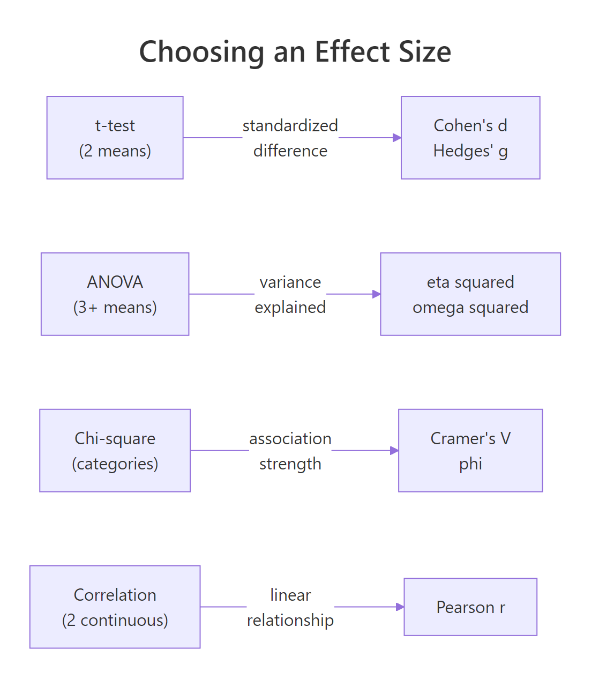
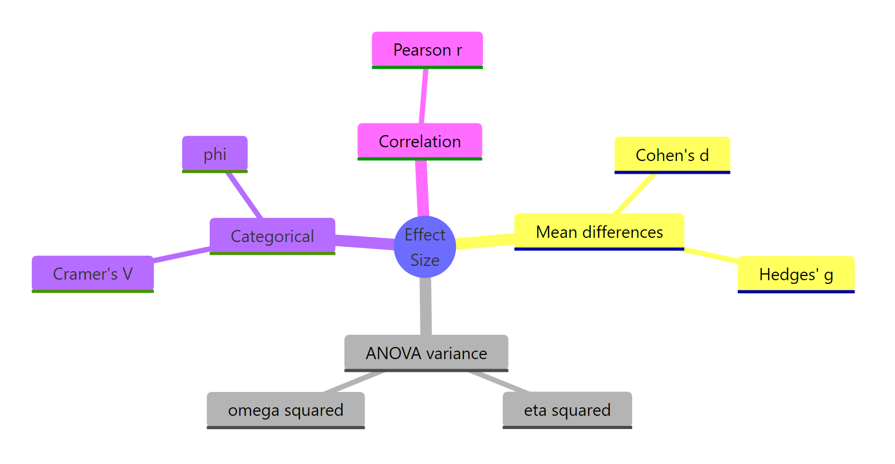

Effect Size in R: The Number p-Values Never Tell You (Cohen's d, η², and r)
Effect size measures the magnitude of a difference or association on a standardized, sample-size-free scale. Where p-values only tell you an effect probably exists, effect size tells you how large it is, so you know whether it matters in the real world.
Why does effect size matter more than p-values?
A p-value answers a narrow question: assuming no effect, how surprising is this data? But "statistically significant" is not the same as "practically important," especially in large samples where trivial differences reach p < 0.001. The fix is reporting effect size alongside every test. Here is the comparison that got buried when you only looked at the p-value.
Below, we compare fuel economy between automatic and manual transmissions in mtcars. The t-test returns a p-value. Then we compute Cohen's d, which converts the mean difference into units of pooled standard deviation, so we can judge how far apart the groups really are.
The p-value (0.0014) just tells you the difference is not pure noise. Cohen's d (1.48) tells you manuals average 1.48 pooled standard deviations higher than automatics in this dataset, which is a very large effect by any convention. Two numbers, two different questions answered.
Now watch what happens when the effect is tiny but the sample is huge. Big N shrinks standard errors, which shrinks p-values, even when the real difference is irrelevant.
The p-value says "reject the null." The effect size says "the gap is about 0.05 standard deviations, which no one would call meaningful." This is the classic N-inflated significance trap, and it is why every major journal now requires effect sizes alongside p-values.
Try it: Compute Cohen's d for the two vectors below. Use the formula from above: mean difference divided by pooled SD.
Click to reveal solution
Explanation: The means differ by about 0.56 with a pooled SD around 0.16, giving d ≈ 3.5 standard deviations apart. Tiny samples, but a huge separation between the groups.
How do you compute Cohen's d for two groups in R?
Cohen's d is the most common effect size in applied research because it works for any two-group mean comparison and has well-known benchmarks. The formula uses the pooled standard deviation as its scaling factor so the result is dimensionless.
$$d = \frac{\bar{x}_1 - \bar{x}_2}{s_{pooled}}, \quad s_{pooled} = \sqrt{\frac{(n_1-1)s_1^2 + (n_2-1)s_2^2}{n_1 + n_2 - 2}}$$
Where:
- $\bar{x}_1, \bar{x}_2$ = group means
- $s_1^2, s_2^2$ = group variances
- $n_1, n_2$ = group sizes
- $s_{pooled}$ = pooled standard deviation across both groups
To avoid rewriting the formula every time, wrap it in a reusable function. Then Hedges' g, a small-sample-corrected variant of d, becomes a one-liner on top.
Hedges' g is d multiplied by a small correction factor that shrinks toward zero as sample size drops. In this case, total N = 32, so the correction trims d from 1.478 to 1.442. For studies with more than ~50 total observations, d and g round to nearly the same number.
Try it: R ships with a dataset called sleep that records the extra hours of sleep under two drugs (group 1 and 2). Use cohens_d() to compute the effect size of drug 2 vs drug 1. Hint: subset sleep$extra by sleep$group.
Click to reveal solution
Explanation: Drug 2 produced about 0.83 pooled SDs more extra sleep than drug 1, which crosses Cohen's "large effect" threshold of 0.8.
How do you measure effect size for ANOVA (η² and ω²)?
When you compare three or more group means with an ANOVA, Cohen's d no longer fits, because there are more than two means. The standard replacement is eta-squared (η²), the proportion of total variance in the outcome explained by the grouping factor.
$$\eta^2 = \frac{SS_{between}}{SS_{total}}$$
η² reads like an R²: 0 means the factor explains nothing, 1 means it explains everything. Values in between are interpretable as "percent of variance explained."
About 73 percent of the variance in mpg is explained by cylinder count. That is a very large effect by Cohen's ANOVA benchmarks (small = 0.01, medium = 0.06, large = 0.14). It also matches the intuition: 4-, 6-, and 8-cylinder engines clearly differ in fuel economy.
η² has a known bias in small samples: it systematically overestimates the true population effect. Omega-squared (ω²) corrects for this by accounting for error variance and degrees of freedom.
$$\omega^2 = \frac{SS_{between} - df_{between} \cdot MS_{error}}{SS_{total} + MS_{error}}$$
Where $MS_{error}$ is the within-group mean square, and $df_{between}$ is the number of groups minus one.
ω² is slightly smaller than η² (0.707 vs 0.733), reflecting the downward correction. With this sample (N = 32), the gap is about 3 percentage points. In truly small samples, the gap grows, which is why ω² is the default choice for reporting in methodological journals.
Try it: Run a one-way ANOVA of Sepal.Length explained by Species using the iris dataset. Compute η² by hand.
Click to reveal solution
Explanation: Species accounts for about 62 percent of the variance in sepal length. Large effect, as expected for a classical iris question.
What effect size do you use for categorical variables (Cramér's V)?
When both variables are categorical, you usually run a chi-square test to detect association. But chi-square grows with sample size, so the raw statistic does not tell you how strong the association is. Cramér's V rescales chi-square to a 0–1 range that does not depend on N.
$$V = \sqrt{\frac{\chi^2}{N \cdot (k - 1)}}, \quad k = \min(\text{rows}, \text{cols})$$
Where $N$ is the total number of observations in the table and $k$ is the smaller of the two dimensions. For a 2×2 table ($k = 2$), V equals the phi coefficient.
Below, we apply V to R's built-in HairEyeColor data, collapsed over sex to give a 4×4 hair-by-eye table.
Cramér's V of 0.28 signals a moderate association between hair and eye color in this sample. The chi-square p-value is astronomically small (N = 592 makes even small deviations "significant"), but V reveals the practical strength of the dependence without that inflation.
Try it: Build a contingency table of gear and cyl from mtcars and compute Cramér's V.
Click to reveal solution
Explanation: With df = 2, V = 0.64 is a large effect: 3-gear cars tend to be 8-cylinder, 4-gear tend to be 4-cylinder, and the correspondence is tight.
How do you interpret Pearson's r as an effect size?
Pearson's r is already on a standardized scale from −1 to 1, so it doubles as its own effect size for relationships between two continuous variables. Its magnitude tells you the strength of the linear relationship directly.
Squaring r gives an additional payoff: $r^2$ is the proportion of variance in one variable explained by the other, which lines up with η² from ANOVA on the same "percent variance explained" scale.
An r of −0.87 is a very strong negative correlation: as car weight rises, mpg falls. Squaring gives 0.75, meaning weight alone explains 75 percent of the variance in fuel economy. Cohen's benchmarks for r are 0.10 (small), 0.30 (medium), and 0.50 (large), so this is far past "large."
Try it: Compute Pearson's r and r² between Sepal.Width and Petal.Width in the iris dataset.
Click to reveal solution
Explanation: A weak-to-moderate negative correlation: wider sepals pair loosely with narrower petals across species. Petal width explains about 13 percent of sepal width variance, a small effect in Cohen's framing.
Which effect size should you use?
With four main families to choose from, picking the right one depends on the test you are running. The decision is mostly mechanical: the structure of the data fixes the effect size family, and you only pick within the family (d vs g, η² vs ω², V vs phi) based on sample size or dimensionality.

Figure 1: Which effect size family matches each kind of statistical test.
Once you have picked a family, interpretation uses Cohen's benchmarks from his 1988 textbook. They are not laws of nature, but they are widely accepted, and journals expect them as a baseline.
| Measure | Small | Medium | Large | Use when |
|---|---|---|---|---|
| Cohen's d, Hedges' g | 0.2 | 0.5 | 0.8 | Comparing two group means |
| η², ω² | 0.01 | 0.06 | 0.14 | One-way ANOVA, 3+ groups |
| Cramér's V (df = 1) | 0.10 | 0.30 | 0.50 | Chi-square, 2×2 or df=1 |
| Pearson's r | 0.10 | 0.30 | 0.50 | Two continuous variables |
A tiny helper function turns raw d values into Cohen's labels.
The mtcars d of 1.48 lands firmly in "large," while the 20000-observation simulation d of 0.05 is "negligible" despite its tiny p-value. Same interpretive framework, opposite substantive conclusions.
Try it: You analyzed survey responses from 500 people and found that a new training program correlates with test-score improvement at r = 0.42. Classify this effect size.
Click to reveal solution
Explanation: r = 0.42 falls in the 0.30–0.50 range, making it a "medium" effect under Cohen's benchmarks for correlations. Worth acting on, but not a ceiling effect.
Practice Exercises
Exercise 1: Report η² for iris
Run a one-way ANOVA of Petal.Length explained by Species in the iris dataset. Extract F, the p-value, and compute η² and ω². Save the three numbers in a named vector called my_iris_report.
Click to reveal solution
Explanation: Species explains about 94 percent of the variance in petal length, one of the largest ANOVA effects you will ever see. η² and ω² agree closely because the sample is large (n = 150).
Exercise 2: Ozone in May vs August
Compare May and August ozone readings in the airquality dataset. Drop NA rows with na.omit() first. Run Welch's t-test, then compute Cohen's d and Hedges' g using the functions from earlier. Interpret d against Cohen's benchmarks.
Click to reveal solution
Explanation: August ozone averages about 1.34 pooled SDs above May, which is a very large effect. Hedges' g is only 0.02 lower because the combined sample is healthy. Interpretation: the seasonal effect on ozone is large, not just "statistically detectable."
Complete Example: Effect size report for mtcars
A full effect-size report usually pairs each test in your analysis with its matching effect size. Here is that workflow end-to-end on mtcars, touching all four families covered above.
Reading the output: transmission type, cylinder count, gear-cylinder association, and vehicle weight all have very large relationships with mpg. Every number sits above Cohen's "large" cutoff. That is expected for mtcars because it was assembled to contrast very different car designs, not to look like real-world sampling noise.
In a real report, you would pair each number with its test statistic and p-value. The effect size is the punchline, but the test confirms it is not a sampling fluke.
Summary
Effect size is the number that turns "the groups differ" into "here is how much they differ, on a scale I can interpret." Use the right family for your data structure, interpret against Cohen's benchmarks while accounting for your domain, and you will never again read a p-value as a magnitude.

Figure 2: Families of effect size and their key members.
| Question | Measure | Small / Medium / Large | Base-R recipe |
|---|---|---|---|
| Do two groups differ? | Cohen's d, Hedges' g | 0.2 / 0.5 / 0.8 | Mean diff / pooled SD |
| Does a factor explain variance? | η², ω² | 0.01 / 0.06 / 0.14 | SS_between / SS_total |
| Are two categories associated? | Cramér's V, phi | 0.10 / 0.30 / 0.50 (df=1) | √(χ² / (N·(k−1))) |
| Do two continuous variables relate? | Pearson r, r² | 0.10 / 0.30 / 0.50 | cor(x, y) |
Three habits go with the table. Always report effect size when you report a p-value. Always note your benchmark source (Cohen, Sawilowsky, or a domain-specific paper). Always attach a confidence interval if your sample is small enough that the point estimate could shift meaningfully with more data.
References
- Cohen, J. Statistical Power Analysis for the Behavioral Sciences, 2nd ed. Lawrence Erlbaum (1988). Link
- Lakens, D. (2013). Calculating and reporting effect sizes to facilitate cumulative science: a practical primer for t-tests and ANOVAs. Frontiers in Psychology, 4, 863. Link
- Cumming, G. (2014). The New Statistics: Why and How. Psychological Science, 25(1), 7–29. Link
- Nakagawa, S. & Cuthill, I. C. (2007). Effect size, confidence interval and statistical significance: a practical guide for biologists. Biological Reviews, 82, 591–605. Link
- Olejnik, S. & Algina, J. (2003). Generalized eta and omega squared statistics: measures of effect size for some common research designs. Psychological Methods, 8(4), 434–447. Link
- American Psychological Association (2020). Publication Manual of the American Psychological Association, 7th ed. Link
- R Core Team. An Introduction to R, base R documentation for
aov(),chisq.test(),cor(). Link
Continue Learning
- Hypothesis Testing in R: runs the tests whose effect sizes this post computes, from two-sample t-tests to chi-square.
- Power Analysis in R: feed your planned effect size into power analysis to get the sample size your study needs. Closes the design loop.
- Measures of Association in R: deeper coverage of categorical association measures beyond Cramér's V, including Kendall's tau-b and Goodman-Kruskal's gamma.